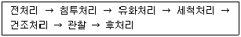
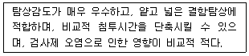
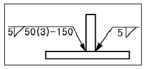

침투비파괴검사기사(구) (2003-03-16 기출문제)
1과목: 침투탐상시험원리
1. 침투탐상시험에서 흔히 나타나는 거짓지시의 원인으로 가장 적합한 것은?
- 과잉 세척
- 부적절한 세척
- 시험품의 온도가 낮을 때
- 제조회사가 다른 침투제와 현상제를 적용할 때
(정답률: 알수없음)

2. 아래 절차에 따라 시험하는 침투탐상 방법은?

- 후유화성 형광침투액(기름베이스 유화제) - 습식현상법
- 후유화성 이원성 형광침투액(기름베이스 유화제) -습식 현상법
- 후유화성 형광침투액(기름베이스 유화제) - 속건식 현상법
- 후유화성 이원성 형광침투액(기름베이스 유화제) -무현상법
(정답률: 알수없음)
3. 다음 중 습식현상제를 관리할 때 그다지 중요하지 않은 사항은?
- 적심의 형태
- 오염
- 농도
- 세척성
(정답률: 알수없음)
4. 침투탐상시험에 이용되는 침투제의 물리적 특성인 적심성(wetting ability)은 무엇을 측정하면 알 수 있는가?
- 비중(specific gravity)
- 표면장력(surface tension)
- 접촉각(contact angle)
- 점성(viscosity)
(정답률: 알수없음)
5. 대량 생산부품중 작은 나사나 열쇠구멍, 각이 날카로운 부품 등의 탐상에 가장 적합한 침투탐상 시험방법은?
- 후유화성 형광침투탐상시험법
- 수세성 형광침투탐상시험법
- 용제제거성 형광침투탐상시험법
- 용제제거성 염색침투탐상시험법
(정답률: 알수없음)
6. 작고 불규칙한 모양의 부품을 생산후 후유화성 침투탐상검사를 하였다. 검사시 발생되는 과도한 침투액의 처리방법으로 적절한 것은?
- 강력한 Spray 세척
- 증기세척
- 솔벤트세척
- 초음파세척
(정답률: 알수없음)
7. 용제제거성 침투탐상시험에 관한 기술중 맞는 것은?
- 다른 침투탐상에 비하여 휴대성이 있다.
- 넓은 면적을 1회 조작으로 탐상할 수 있다.
- 대량 생산부품의 탐상에 적합하다.
- 타 방법보다 세정처리가 용이하다.
(정답률: 알수없음)
8. 침투탐상 시험방법 중 다음과 같은 장점을 갖는 것은?

- 형광침투, 용제법
- 형광침투, 유화제법
- 염색침투, 수세법
- 염색침투, 용제법
(정답률: 알수없음)
9. 다음 중 다른 탐상제에 비하여 형광침투 탐상제의 특성으로서 가장 중요한 것은?
- 점도
- 모세관 현상
- 접촉각
- 형광 밝기
(정답률: 알수없음)
10. 후유화제 형광법에서 유화제를 적용하는 방법 중 잘못된것은?
- 시편에 분무시키는 방법
- 시편에 붓칠하는 방법
- 시편을 침적시키는 방법
- 시편에 부어서 적용하는 방법
(정답률: 알수없음)
11. 특수한 검사목적에 사용되는 역형광법(Reversed fluorescencemethod)에 대한 설명 중 잘못된 것은?
- 염색침투제를 사용하여 검사한다.
- 유화제에 형광성분이 포함되어 있다.
- 형광성분이 있는 현상제를 적용한다.
- 불연속부는 어두운 선이나 점으로 나타난다.
(정답률: 알수없음)
12. 침투탐상검사의 특성이 아닌 것은?
- 불연속의 깊이를 정확하게 측정할 수 있다.
- 미세한 표면 불연속의 검출이 가능하다.
- 작업자가 다른 침투제를 혼용 사용할 경우 감도가 저감되는 효과가 나타날 수 있다.
- 대형 부품의 현장 검사가 가능하다.
(정답률: 알수없음)
13. 시험체의 표면이 거친 경우 적용하기에 가장 적합한 방법은?
- 수세성 형광침투액을 사용하는 방법
- 후유화성 형광침투액을 사용하는 방법
- 용제제거성 형광침투액을 사용하는 방법
- 후유화성 염색침투액을 사용하는 방법
(정답률: 알수없음)
14. 미세한 흠을 발견하기에 가장 적합한 침투탐상시험은?
- 후유화성 형광침투탐상시험법
- 용제 제거성 형광침투탐상시험법
- 수세성 염색침투탐상시험법
- 후유화성 염색침투탐상시험법
(정답률: 알수없음)
15. 용제제거성 침투액을 사용할 때 과잉 침투액 제거는 어떻게 하는가?
- 용매를 뿌린뒤 물로 세척한다.
- 용매를 분무기로 뿌려 세척한다.
- 깨끗한 종이로 닦는다.
- 용매로 적신 헝겊으로 닦는다.
(정답률: 알수없음)
16. 침투탐상시험에서 수용성 습식현상의 장점으로 가장 적합한 것은?
- 물에 완전히 용해되기 때문에 많이 흔들어줄 필요가 없다.
- 침투액을 최대로 빨아올리기 위한 흡출작용이 가장 강하다.
- 형광침투액 사용시 가장 감도가 높은 현상제이다.
- 수세성 침투액 사용시 가장 적절하게 적용할 수 있는 현상제이다.
(정답률: 알수없음)
17. 시험방법의 효율성 등의 문제로 인해 일반적으로 잘 적용하지 않는 침투탐상검사법은?
- 수세성 형광침투액을 사용하는 방법
- 수세성 염색침투액을 사용하는 방법
- 후유화성 형광침투액을 사용하는 방법
- 후유화성 염색침투액을 사용하는 방법
(정답률: 알수없음)
18. 침투탐상시험에 사용하는 이상적인 침투제의 조건으로 틀린 것은?
- 매우 미세한 개구부에도 쉽게 침투되어야 한다.
- 증발이나 건조가 빨라야 한다.
- 얕거나 벌어져 있는 개구부일지라도 쉽게 세척되지 않아야 한다.
- 얇은 도포막을 형성하여야 한다.
(정답률: 알수없음)
19. 침투탐상시험법으로 유리의 미세균열을 탐상하고자 할 때 가장 효과적인 방법은?
- 후유화성 염색 침투탐상법
- 후유화성 형광 침투탐상법
- 대전입자(electrified particle)탐상법
- 여과입자(filtered particle)탐상법
(정답률: 알수없음)
20. 오스테나이트 스테인레스강 또는 티타늄에 적용되는 탐상제의 염화물 함량은 몇 %를 초과해서는 안되는가?
- 0.01%
- 0.1%
- 1.0%
- 1.3%
(정답률: 알수없음)
2과목: 침투탐상검사
21. 침투탐상시험에서 표면 균열은 어떤 지시로 나타나는가?
- 예리하고 뚜렷하게
- 넓고 불명확하게
- 원의 모양으로
- 높고 희미하게
(정답률: 알수없음)
22. 침투탐상시험 현상제의 물리적인 특성이 아닌 것은?
- 높은 흡수성 현상
- 높은 빛 산란 현상
- 매우 미세한 입자
- 높은 빛 흡수성
(정답률: 알수없음)
23. 나사부의 침투탐상시험으로 가장 알맞는 검사 방법은?
- 형광침투 용제법
- 염색침투 유화제법
- 염색침투 수세법
- 형광침투 유화제법
(정답률: 알수없음)
24. 수세성 침투제를 사용하여 알루미늄 주조품을 시험할 경우 침투시간은?
- 1 ∼ 3분
- 5 ∼ 15분
- 20 ∼ 30분
- 40 ∼ 50분
(정답률: 알수없음)
25. 주조물 표면에 존재하는 기공을 염색침투수세법으로 검사하고자 할 때 다음 중 침투시간을 가장 길게 해야 할 시험체의 재질은?
- 알루미늄
- 마그네슘
- 강
- 황동
(정답률: 알수없음)
26. 다음 중 무관련지시가 아닌 것은?
- 압력고정쇠에서 흡입되어 나타난 지시
- 사용 중 검사시 주조품에서 나타난 기공지시
- 작은 블라인드(blind)의 구멍에서 흡입되어 나타난 줄 무늬
- 세척이 불충분한 검사체에 나타난 줄무늬와 배경
(정답률: 알수없음)
27. 수세정(水洗淨)의 경우 현상처리를 효과적으로 하기 위한 건조처리의 시기 설명으로 옳은 것은?
- 습식 현상법에서는 세정처리 후에 한다.
- 건식 현상법에서는 현상처리 후에 한다.
- 무현상법에서는 건조처리를 하지 않는다.
- 속건식 현상법에서는 세정처리 후에 한다.
(정답률: 알수없음)
28. 저온에서 높은 압력으로 완성된 강단조물을 침투탐상검사 한 결과 선형지시가 나타났다. 이 때 이 선형지시의 원인이 되는 불연속은 일차적으로 다음 중 어떤 것으로 의심해야 하는가?
- 터짐
- 기공
- 수축관
- 개재물 혼입
(정답률: 알수없음)
29. 침투제에 함유되는 황의 함량을 제한하고 있는데 일반적으로 몇 % 까지 허용되는가?
- 0.01%
- 0.1%
- 1.0%
- 10.0%
(정답률: 알수없음)
30. 다음 침투탐상검사법중 침투제에 수분이 혼합되면 감도가 가장 현저하게 낮아지는 검사 방법은?
- 형광침투탐상(수세법)
- 형광침투탐상(유화제법 - Lipophilic)
- 형광침투탐상(유화제법 - Hydrophilic)
- 형광침투탐상(용제제거법)
(정답률: 알수없음)
31. 침투탐상검사시 탐상감도는 명암도(Contrast)와 가시도(Seeability)로 나타낸다. 가시도 측정에 필요한 반사된 빛의 양이 2%라면 R.V.U(Relative Visibility Units)의 값은 얼마인가?
- 2
- 20
- 50
- 100
(정답률: 알수없음)
32. 마그네슘 용접품 가공 결함의 탐상시 요구되는 수세성 침투액의 표준침투시간으로 가장 적당한 것은? (단, 온도범위는 16℃ - 32℃임 )
- 5∼10분
- 10분
- 15분
- 30분
(정답률: 알수없음)
33. 형광침투액에 비해서 염색침투액의 장점은?
- 작은 지시를 더 잘볼 수 있다.
- 거친 표면에서 대조색이 적다.
- 크롬산 표면과 전해에 사용 가능하다.
- 특별한 조명이 불필요하다.
(정답률: 알수없음)
34. 침투제의 물리적, 화학적 특성으로 가장 옳은 것은?
- 점성이 높아야 한다.
- 적심 능력이 높아야 한다.
- 쉽게 제거되어서는 안된다.
- 독성이 있어야 한다.
(정답률: 알수없음)
35. 제품별 검사 방법에 대한 설명으로 가장 적절하지 않는 것은?
- 볼트류는 가공 중에 균열이 발생되는 경우가 있어 건식 현상법에 의한 수세성 형광침투검사를 주로 한다.
- 단조품 중 훅크(hook)는 속건식현상법에 의한 용제제거성 염색침투탐상검사를 주로 한다.
- 용접부의 침투탐상검사는 주로 속건식 현상법에 의한 염색침투탐상검사를 한다.
- 사용중인 터빈 브레이드에 발생하는 결함은 건식현상법에 의한 수세성 형광침투검사를 주로 한다.
(정답률: 알수없음)
36. 침투탐상시험시 침투제에 함유된 황이나 크롬성분은 특히 다음의 어느 부품 검사에 영향을 미치는가?
- 알루미늄합금
- 니켈합금
- 마그네슘합금
- 연강
(정답률: 알수없음)
37. 침투제 및 현상제의 잔류물을 제거시키는 후처리 과정은 재료가 부품의 다른 재료들과 반응할 경우에 대비하여 꼭 필요한데 이 때의 반응에 의한 결과는?
- 불연속 지시
- 부식 현상
- 적절한 표면 장력
- 주위 조건과의 색채 대비
(정답률: 알수없음)
38. 침투제의 성능시험시 4×4인치 크기의 스텐레스철판에 100메시(mesh)정도 되는 모래를 사용하여 60파운드의 공기압으로 샌드브라스트하여 표면을 처리한 시험편을 사용하는 시험은 다음 중 무엇을 측정하는 시험인가?
- 형광 밝기 시험
- 자외선등 하에서의 형광안정성 시험
- 고온 금속판에서의 형광안정성 시험
- 형광 얼룩 반점 시험
(정답률: 알수없음)
39. 착색재료, 기본용제, 용제 및 계면활성제가 들어있는 침투액은 어떤 침투탐상검사법에 적용하는가?
- 형광 후유화성 침투탐상검사법
- 형광 수세성 침투탐상검사법
- 염색 후유화성 침투탐상검사법
- 염색 수세성 침투탐상검사법
(정답률: 알수없음)
40. 불연속지시가 나타난 것을 제거한 후 다시 현상제를 적용하여도 뚜렷한 불연속 지시가 관찰되었다. 이 불연속의 설명으로 다음 중 가장 알맞는 것은?
- 미세한 불연속이기 때문이다.
- 기공류의 불연속에서 대부분 나타난다.
- 얕은 균열의 불연속에서 대부분 나타난다.
- 큰 불연속 안에 침투제의 양이 많기 때문이다.
(정답률: 알수없음)
3과목: 침투탐상관련규격
41. KS B 0816에 따른 침투탐상시험에서 결함의 기록시 다음중 결함의 기록에 포함되지 않는 것은?
- 결함의 종류
- 결함길이
- 결함면적
- 결함의 위치
(정답률: 알수없음)
42. KS B 0816에 따른 침투지시 모양의 분류에서 편석은 다음중 어느 모양에 속하는가?
- 갈라짐에 의한 침투지시 모양
- 선상 침투지시 모양
- 원형상 침투지시 모양
- 수축상 침투지시 모양
(정답률: 알수없음)
43. ASME Sec.V, Art.24에 의하면 다음 결함 중 침투탐상시험으로 검출할 수 없는 결함은?
- 단조 겹침
- 크레이트 균열
- 그라인딩 균열
- 비금속 내부 개재물
(정답률: 알수없음)
44. KS W 0914에 따라 자외선 강도를 측정할 때 자외선 필터 앞에서의 최소한의 측정거리는?
- 28cm
- 33cm
- 38cm
- 43cm
(정답률: 알수없음)
45. ASME Sec.V에 의한 침투제의 적용방법이 아닌 것은?
- 침지(Dipping)
- 솔질(Brushing)
- 분무(Spraying)
- 굴림(Rolling)
(정답률: 알수없음)
46. 다음 중 자기 스스로를 계속 복제하므로서 시스템의 부하를 증가시켜 결국 시스템을 다운시키는 프로그램은?
- Spoof
- Authentication
- Worm
- Sniffing
(정답률: 알수없음)
47. KS W 0914의 항공우주용 기기의 침투탐상검사방법에 따라 탐상할 때 수세성 과잉침투액을 물로 세척하는 경우 적절한 물의 온도 범위는?
- 0℃∼10℃
- 10℃∼38℃
- 38℃∼72℃
- 72℃∼90℃
(정답률: 알수없음)
48. KS W 0914에 따른 침투액 적용시 체류시간이 얼마를 초과할 때 건조되지 않도록 필요에 따라 침투액을 재적용하여야 하는가?
- 30분
- 60분
- 90분
- 120분
(정답률: 알수없음)
49. KS B 0816에 따라 알루미늄판으로 만든 대비시험편 가운데에 1.5mm 깊이로 홈을 파는 이유는?
- 비교하는 대상의 탐상재료가 반대쪽으로 넘어가지 않게 하기 위함이다.
- 가열시 온도가 서로 다르게 하기 위함이다.
- 인공결함의 형태가 서로 다르기 때문이다.
- 수세성과 후유화성침투제를 서로 비교하기 위함이다.
(정답률: 알수없음)
50. ASME Sec.V, Art.6에서 시험체 온도가 정상 범위를 벗어날 때 침투액의 성능을 알기 위하여 사용되는 비교시험편은?
- 담금질로 균열이 된 알루미늄 시험편
- 노말라이징으로 오스테나이트조직이 된 스테인레스강판
- 넓이 3X4인치, 두께가 1인치인 알루미늄 시험편
- 냉간 균열이 미세한 탄소강 시험편
(정답률: 알수없음)
51. 윈도우 바탕화면의 등록정보에서 변경할 수 없는 것은?
- 배경
- 보호기
- 네트워크
- 배색
(정답률: 알수없음)
52. ASME Sec.V, Art.6에 따른 형광침투탐상시험에서 자외선의 강도는?
- 자외선등으로부터 36cm거리에서 800㎼/㎝2이상일 것
- 자외선등으로부터 30cm거리에서 1000㎼/㎝2이상일 것
- 시험품의 표면에서 1000㎼/㎝2이상일 것
- 시험품의 표면에서 800㎼/㎝2이상일 것
(정답률: 알수없음)
53. ASME Sec.V에 따른 염색침투탐상시험에서 시험 중의 조도는 얼마 이상이어야 하는가?
- 20Lx
- 200Lx
- 300Lx
- 500Lx
(정답률: 알수없음)
54. Windows98에서 Window 종료 대화상자 중 시스템의 전원을 내리지 않고 최소한의 전력을 사용하는 상태로 두는 시스템 종료 방법으로 다시 원래의 화면으로 돌아오려면 마우스를 클릭하거나 키보드를 누르면 되는 것은?
- 시스템 대기
- MS-DOS 모드에서 시스템 다시 시작
- 시스템 다시 시작
- 시스템 중지
(정답률: 알수없음)
55. KS B 0816에서 유화제의 점검방법으로 틀린 내용은?
- 유화제의 성능시험은 A형 대비시험편을 이용할 수 있다.
- 겉모양 검사시 현저하게 흐리거나 침전물이 생기는가를 점검한다.
- 점도 상승으로 인한 유화성능 저하를 점검한다.
- 형광휘도의 저하를 점검한다.
(정답률: 알수없음)
56. KS B 0816에 따른 용제제거성 염색침투탐상시험에서 침투액의 용제세척시 과세척을 피하기 위한 가장 적합한 방법은?
- 침투시간을 사양서에서 요구하는 시간의 두배로 한다.
- 적용하는 침투액의 양을 증가시킨다.
- 세척액이 스며든 천 또는 종이를 사용하여 닦아낸다.
- 세척액을 직접 탐상표면에 스프레이한다.
(정답률: 알수없음)
57. Windows 98에서 [디스크조각모음]을 하는 목적은?
- 물리적 오류를 검사하기 위하여
- 논리적 오류를 검사하기 위하여
- 손상된 파일을 복구하기 위하여
- 프로그램을 더욱 빠르게 실행하기 위하여
(정답률: 알수없음)
58. 컴퓨터로 할 수 있는 일을 수행하는 프로그램들 중 기능상 성격이 다른 것은?
- dBASEIII+
- MS-Access
- Fox-Pro
- Lotus-123
(정답률: 알수없음)
59. KS B 0816에서 침투탐상 시험방법을 분류하는 기호 FA-W가 의미하는 것은?
- 수세성 염색침투액 - 건식 현상제를 적용
- 후유화성 염색침투액 - 건식 현상제를 적용
- 수세성 형광침투액 - 습식 현상제를 적용
- 후유화성 형광침투액 - 습식 현상제를 적용
(정답률: 알수없음)
60. ASME Sec.V에서는 침투탐상시험시 비교시험편을 사용할 경우를 제시하고 있다. 어떤 경우 필요한가?
- 시험품 온도가 50℉ 미만, 125℉ 초과
- 시험품 온도가 50℉ 초과, 125℉ 미만
- 시험품 온도가 90℉ 미만, 125℉ 초과
- 시험품 온도가 90℉ 초과, 125℉ 미만
(정답률: 알수없음)
4과목: 금속재료학
61. 마우러(maurer)의 조직도와 관련이 깊은 것은?
- Fe와 Mn
- C와 Si
- Cu와 Sn
- Ca와 Pb
(정답률: 알수없음)
62. 침탄용강의 구비조건에 해당되지 않는 것은?
- 저 탄소강이어야 한다.
- 침탄시에 고온에서 장시간 가열하여도 결정입자가 성장하지 않는 강이어야 한다.
- 표면에 결점이 없어야 한다.
- 고 탄소공구강이어야 한다.
(정답률: 알수없음)
63. 입자분산강화금속(PSM)의 제조방법이 아닌 것은?
- 내부산화법
- 열분해법
- 풀몰드 주조법
- 용융체 포화법
(정답률: 알수없음)
64. 아연합금 중 ZAMAK 합금은?
- 다이캐스팅용 합금
- 가공용 합금
- 금형용 합금
- 고망간 합금
(정답률: 알수없음)
65. 합금의 시효경화는 용질원자에 의하여 단위운동에 대한 저항에 원인이 된다.이 저항력의 크기 결정과 관련이 가장 적은 것은?
- 용질원자의 집합상태
- 용질원자의 크기
- 입자간의 평균거리
- 결정입계의 색깔
(정답률: 알수없음)
66. 강재에 혼입되는 불순물 중에서 상온 취성에 가장 큰 영향을 미치는 원소는?
- P
- S
- As
- Sn
(정답률: 알수없음)
67. 0.4 wt% C 만을 함유한 탄소강을 평형 냉각시켰을때 상온에서의 경도는? (단, Ferrite의 경도는 80 HB, Pearlite의 경도는 300 HB, 공석 조성은 0.8 wt% C로 한다.)
- 90 HB
- 150 HB
- 190 HB
- 240 HB
(정답률: 알수없음)
68. 금속의 결정구조가 불규칙 상태에서 규칙 상태로 변태 되었을 때 재질에 미치는 영향은?
- 경도(硬度)가 감소한다.
- 연성(延性)이 낮아진다.
- 강도(强度)가 낮아진다.
- 전기 전도도가 감소한다.
(정답률: 알수없음)
69. WC-TiC, WC-TaC 분말과 Co 분말을 혼합, 압축성형 후 약 900℃정도로 수소나 진공 분위기에서 가열하여 1400℃ 사이에서 소결시켜 절삭 공구로 이용되는 금속은?
- 스텔라이트
- 고속도강
- 초경합금
- 모넬메탈
(정답률: 알수없음)
70. 베이나이트와 마텐자이트에 관한 설명이 틀린 것은?
- 공석강은 750℃이상의 온도에서 항온 변태시켜야 베이나이트가 형성되기 시작한다.
- 마텐자이트변태에서 Ms와 Mf 사이의 온도구간은 보통 200∼300℃ 이다.
- 마텐자이트는 [γ]에서 일어나는 전단응력에 의해서 생성한다.
- 마텐자이트는 침상조직으로 성장한다.
(정답률: 알수없음)
71. 라우탈(lautal)의 합금 성분으로 맞는 것은?
- Cu – Si - P
- Al – Ni - Pb
- Al – Cu - Si
- W - V - Mg
(정답률: 알수없음)
72. 포석형(RC130B 또는 C-130AM 이라함)의 풀림재로서 인장강도 100 Kgf/mm2, 연신율 15% 인 합금은?
- Fe - Mn 계
- Ti - Al 계
- Zn - Mg 계
- Al - Si 계
(정답률: 알수없음)
73. 실용 동합금의 2원계 상태도에서 청동형에 대한 설명 중 맞는 것은?
- 공정변태한 것으로 시효성합금의 특수황동이라고도 한다.
- 포정 반응으로 생긴 β 가 상온까지 존재하므로 실용합금은 α 상 혹은 α + β 상의 조직이다.
- 공석 변태가 존재하며 이 공석 변태는 담금질로 방지할 수 있다.
- 청동형에는 Cu - Pb, Cu - Zn, Cu - Ag 등이 있다.
(정답률: 알수없음)
74. 합금강의 오스포오밍의 설명이 맞는 것은?
- 오스테나이트강을 재결정 온도 이하, Ms 점 이상의 온도범위에서 소성가공한 후 담금질한 것이다.
- 시멘타이트 변태온도 이상에서 담금질 하여야 한다.
- 경화의 주요인은 페라이트의 조대화에 있다.
- 열처리 후 조직은 마텐자이트입자의 조대화로 강도가 저하된다.
(정답률: 알수없음)
75. 18 - 8 스테인리스강의 결정입계에 석출하여 입간부식(intergranular corrosion)을 일으키는 것은?
- 황화물 입자
- 질화물 입자
- 산화물 입자
- 탄화물 입자
(정답률: 알수없음)
76. 탄소강이나 저합금강에서 시효(時效)를 받지 않고 있는 Martensite(virgin martensite)의 결정구조는?
- 면심입방정
- 체심정방정
- 조밀육방정
- 사방정
(정답률: 알수없음)
77. 중성자를 잘 통과 시키므로 원자로 연료의 피복제, 중성자의 반사제나 원자핵 분열기에 이용되는 금속은?
- Ge
- Be
- Si
- Te
(정답률: 알수없음)
78. 강에 첨가된 B 의 특징이 잘못된 것은?
- 경화능을 개선시킨다.
- 질량효과를 증대시킨다.
- O2및 N2와의 친화력이 강해진다.
- 모합금으로써 첨가해야 한다.
(정답률: 알수없음)
79. 구상흑연주철을 사형주조(sand casting)시 Pin hole 결함의 발생원인은? (단, 이 주철은 Mg 처리에 의하여 제조하는 것으로 함)
- 주형사(sand mold)의 수분(水分)이 부족하여
- 주형사의 통기도가 높아서
- 겨울철에 대기중의 수분이 낮아서
- Mg 처리량이 과다(過多)할 때
(정답률: 알수없음)
80. 황동에서 자연균열을 방지하려면 어떻게 하여야 하는가?
- 암모니아 분위기로 한다.
- 아연, 산소, 탄산가스 등을 증가시킨다.
- 200∼250℃에서 풀림하여 내부응력을 제거한다.
- 수은이나 그 화합물을 첨가한다.
(정답률: 알수없음)
5과목: 용접일반
81. 다음 가스절단 팁(Tip)의 절단산소 구멍의 종류 중에서 후판을 절단하는데 가장 많이 이용되는 것은?
- 직선형 노즐
- 스트레이트 노즐
- 다이버전트 노즐
- 저속 다이버전트 노즐
(정답률: 알수없음)
82. 교류 아크 용접기에서 AW300 이란 표시가 뜻하는 것은?
- 2차 최대 전류 300A
- 정격 2차 전류 300A
- 최고 2차 무부하 전압 300A
- 정격 사용률 300A
(정답률: 알수없음)
83. 다음 중 서브머지드 아크 용접법의 장점 설명으로 틀린것은?
- 용입이 깊다.
- 비드 외관이 매우 아름답다.
- 용융속도 및 용착속도가 빠르다.
- 적용재료에 제한을 받지 않는다.
(정답률: 알수없음)
84. 보기의 KS 용접 도시기호를 올바르게 해석한 것은 ?

- 양쪽 모두 단속용접
- 단속용접 용접수는 3
- 용접 피치는 50㎜
- 용접 길이는 150㎜
(정답률: 알수없음)
85. AW 300의 아크 용접기로 220[A]의 용접전류를 사용하여 10시간 용접했다. 이 경우 허용 사용율은 약 몇 % 인가? (단, 용접기의 정격 사용율은 45(%)이다.)
- 83.7
- 837
- 61.4
- 614
(정답률: 알수없음)
86. 탄산가스 아크용접 용극식에서 일반적으로 사용되는 보호 가스가 아닌 것은?
- CO2 + O2
- CO2 + Ar
- CO2 + N2
- CO2 + Ar + O2
(정답률: 알수없음)
87. 아크용접에서 아크쏠림(arc blow)을 방지하기 위한 조치사항으로 틀린 것은?
- 직류(DC)용접기 대신 교류(AC)용접기를 사용한다.
- 접지점을 멀리하여 위치를 바꾼다.
- 가접을 크게하고 아크길이를 짧게한다.
- 용접전류를 낮추고 용접속도를 빠르게 한다.
(정답률: 알수없음)
88. 주철의 용접이 연강에 비하여 대단히 곤란한 이유로서 적합하지 않는 사항은 ?
- 예열하지 않는 용접에서는 냉각속도가 느리므로 담금질 경화가 되지 않는다.
- 일산화 탄소가스가 발생되어 용착금속에 기공이 생기기 쉽다.
- 장시간 가열하여 흑연이 조대화된 경우 모재와의 친화력이 나쁘다.
- 용융상태에서 급냉하면 백선화되어 수축이 큰 잔류응력이 발생되어 균열이 생기기 쉽다.
(정답률: 알수없음)
89. 다음 용접 중 알루미늄 합금이나 마그네슘 합금 등의 용접에 가장 적합한 것은?
- 서브머지드 용접
- 탄산가스 아크 용접
- 불활성가스 용접의 직류 정극성 용접
- 불활성가스 용접의 직류 역극성 용접
(정답률: 알수없음)
90. 내용적 50ℓ 의 산소용기에 고압력계는 120기압 일 때, 프랑스식 200번 팁으로 몇시간 용접할 수 있는가? (단, 가스 혼합비는 1 : 1 이다.)
- 5시간
- 30시간
- 15시간
- 60시간
(정답률: 알수없음)
91. 기공 또는 용융 금속이 튀는 현상이 발생한 결과, 용접부 바깥면에서 나타나는 작고 오목한 구멍을 뜻하는 용어는?
- 피트(pit)
- 크레이터(crater)
- 홈(groove)
- 스패터(spatter)
(정답률: 알수없음)
92. 전기저항 용접에서 용접성에 영향을 가장 적게 미치는 인자는?
- 전류
- 전압
- 가압력
- 통전시간
(정답률: 알수없음)
93. 수소와 질소가 용접부에 미치는 다음의 영향 중 질소의 영향으로 가장 적합한 것은?
- 금속 파면에 선상 조직을 일으킨다.
- 파면에 은점이 나타난다.
- 저온 뜨임시 시효 경화현상이 나타난다.
- 비드 언더 (bead under) 크랙을 유발한다.
(정답률: 알수없음)
94. 용접균열은 발생장소에 따라서 용접금속 균열과 열영향부 균열로 대별된다. 다음 중 용접 비드 종점에서 흔히 볼수 있는 고온 균열로 열영향부 균열이 아닌 것은?
- 비드 밑 균열(under bead crack)
- 토 균열(toe crack)
- 층상 균열(lamellar tear)
- 크레이터 균열(crater crack)
(정답률: 알수없음)
95. 피복 아크용접에서 아크 전압이 30V, 아크 전류가 150A, 용접속도는 20cm/min일 때 용접부에 주어지는 용접 입열량은 몇 Joule/cm 인가?
- 225
- 1350
- 22500
- 13500
(정답률: 알수없음)
96. 직류 아크용접기의 특성 설명 중 잘못된 것은?
- 극성 선택이 가능하다.
- 자기 쏠림이 없다.
- 역률이 양호하다.
- 비피복봉 사용이 가능하다.
(정답률: 알수없음)
97. 가스용접용 토치는 사용하는 아세틸렌가스 압력에 의하여 저압식, 중압식, 고압식으로 나누어진다. 다음 중 저압식 토치의 아세틸렌 공급압력으로 가장 적합한 설명은?
- 0.04 kgf/㎝2 이상
- 0.07 kgf/㎝2 이하
- 0.4 kgf/㎝2 이상
- 1.0 kgf/㎝2 이상
(정답률: 알수없음)
98. 용접시 생길 수 있는 수축 변형을 감소시키는 방법으로 비드를 두들겨서 용착금속이 늘어나게 하여 용착금속의 수축을 방지하여 변형을 감소시키는 방법은?
- 피닝법
- 케스케이드법
- 도열법
- 빌드업법
(정답률: 알수없음)
99. 다음 중 점 용접법의 종류가 아닌 것은?
- 단극식 점용접
- 다전극식 점용접
- 저압식 점용접
- 맥동식 점용접
(정답률: 알수없음)
100. 피복아크용접에서 모재가 녹은 깊이를 의미하는 용어는?
- 용융지(weld pool)
- 용적(globule)
- 용락(burn through)
- 용입(penetration)
(정답률: 알수없음)